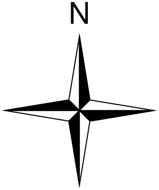
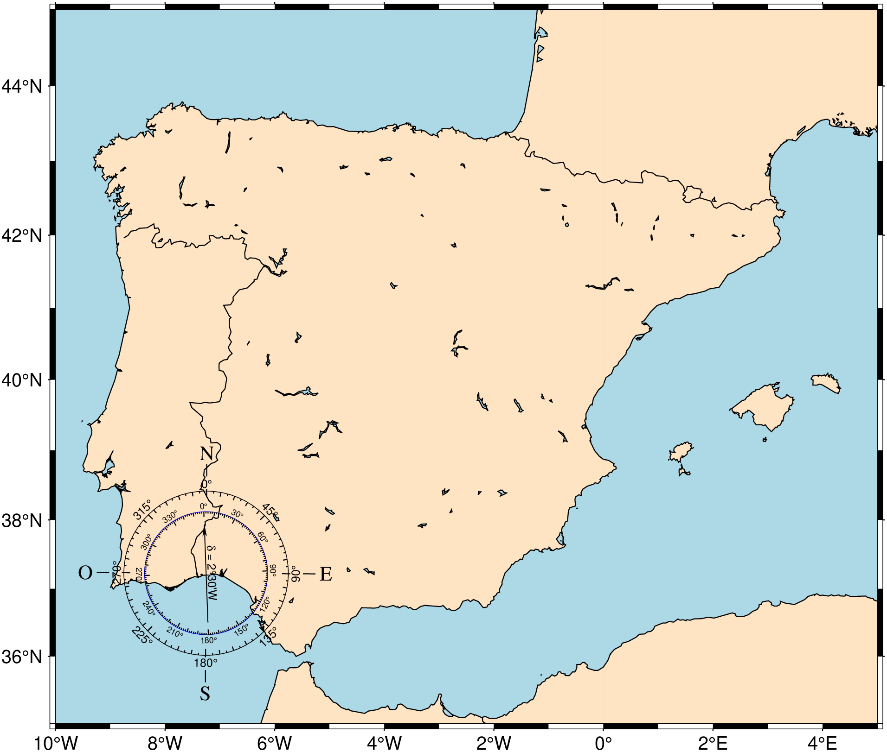

using GMT
compass(width=2.5, fancy=true, labels=",,,N", show=true)
Draw a map directional rose or magnetic compass on the map.
Convenience function that wraps basemap to draw directional (-Td) or magnetic (-Tm) compass roses. The mode is auto-selected: if dec (magnetic declination) is provided, a magnetic compass is drawn; otherwise a directional rose is drawn.
Can be called standalone (creates its own plot) or as an overlay (compass!) on an existing plot. When called standalone without region/proj, a default canvas sized to fit the rose is created automatically using paper coordinates.
anchor : – anchor=(x,y) | anchor=refpoint
Reference point on the map for the rose. When called standalone without region/proj, this is interpreted as paper coordinates (cm). In overlay mode or with explicit region/proj, the coordinate system is determined by the map, inside, outside, norm, or paper modifiers.
width : – width=val
Width of the rose in plot coordinates (cm). This also controls the auto-generated canvas size when no region/proj is given.
fancy : – fancy=true | fancy=level
Draw a “fancy” rose. Level 1 (or true) draws the two principal E-W, N-S orientations. Level 2 adds the two intermediate NW-SE and NE-SW orientations. Level 3 adds the eight minor orientations.
labels or label : – labels=“W,E,S,N”
Comma-separated labels for the cardinal points. Skip a label by leaving it blank (e.g., ",,,N"). Use labels=true to get the default W,E,S,N labels.
justify : – justify=code
2-char justification code for the anchor point (e.g., :CM for center-middle). See text.
offset : – offset=(dx,dy)
Offset from the anchor point.
map, inside, outside, norm, paper :
Coordinate system for the anchor point. Use map=true for map coordinates, inside=code or outside=code for justification-based placement, norm=true for normalized (0-1) coordinates, or paper=true for plot coordinates.
All directional options above, plus:
dec : – dec=val
Magnetic declination in degrees. The presence of this option switches the function to magnetic compass mode (-Tm).
annot : – annot=(a1,a2,a3,a4,a5,a6)
Six annotation/tick intervals: the first three for geographic directions (annotation, tick, minor tick) and the last three for magnetic directions. Default is 30/5/1 for both.
rose_primary : – rose_primary=pen | rose_primary=(width, color)
Pen for the outer (primary) circle of the compass.
rose_secondary : – rose_secondary=pen | rose_secondary=(width, color)
Pen for the inner (secondary) circle of the compass.
All other keyword arguments are passed to basemap. Common ones include:
Note: when compass is called without an explicit frame, it defaults to frame=:none so that only the compass rose is drawn (no axes).
A simple directional rose — no region or proj needed. The canvas is auto-sized to fit the rose.
Plain, fancy level 1, and fancy level 3, plotted using overlay mode with shifts.
using GMT
basemap(region=(-5,5,-5,5), proj=:merc, figscale=0.4, frame=:none,
rose=(map=true, anchor=(0,0), justify=:CM, width=2.5))
compass!(width=2.5, anchor=(0,0), justify=:CM, fancy=true, labels=",,,N", xshift=3)
compass!(width=2.5, anchor=(0,0), justify=:CM, fancy=3, labels=true,
region=(-7,7,-5,5), xshift=3.5, show=true)psbasemap [ERROR]: Option -T: Invalid justification code 0/ after j
psbasemap [ERROR]: Option -T: Map rose reference point was not accepted
Positioning is specified via one of four coordinate systems:
g: Give <refpoint> in map coordinates.
j: Set inside-the-box <refpoint> via justification code (BL, MC, etc).
J: Set outside-the-box refpoint> via justification code (BL, MC, etc).
n: Give <refpoint> in normalized coordinates in 0-1 range.
x: Give <refpoint> in plot coordinates.
All systems except x require the -R and -J options to be set. Refpoint modifiers:
+j Append 2-char <justify> code to associate that anchor point on the map rose with
<refpoint>. If +j<justify> is not given then <justify> will default to the same as
<refpoint> (with j), or the mirror opposite of <refpoint> (with -J), or MC (otherwise).
+o Offset map rose from <refpoint> by <dx>[/<dy>] in direction implied by <justify> [0/0].Something went wrong when calling the module. GMT error number = 72 Stacktrace: [1] error(s::String) @ Base .\error.jl:35 [2] _gmt(cmd::String, args::Vector{Any}) @ GMT C:\Users\j\.julia\dev\GMT\src\gmt_main.jl:172 [3] gmt(cmd::String, args::Nothing) @ GMT C:\Users\j\.julia\dev\GMT\src\gmt_main.jl:23 [4] _finish_PS_module(d::Dict{…}, cmd::Vector{…}, opt_extra::String, K::Bool, O::Bool, finish::Bool, args::Vector{…}) @ GMT C:\Users\j\.julia\dev\GMT\src\common_options.jl:4558 [5] prep_and_call_finish_PS_module @ C:\Users\j\.julia\dev\GMT\src\common_options.jl:4473 [inlined] [6] prep_and_call_finish_PS_module @ C:\Users\j\.julia\dev\GMT\src\common_options.jl:4467 [inlined] [7] helper_basemap(O::Bool, K::Bool, d::Dict{Symbol, Any}) @ GMT C:\Users\j\.julia\dev\GMT\src\psbasemap.jl:70 [8] compass(first::Bool, d::Dict{Symbol, Any}) @ GMT C:\Users\j\.julia\dev\GMT\src\compass.jl:114 [9] #compass#928 @ C:\Users\j\.julia\dev\GMT\src\compass.jl:62 [inlined] [10] compass @ C:\Users\j\.julia\dev\GMT\src\compass.jl:60 [inlined] [11] #compass!#927 @ C:\Users\j\.julia\dev\GMT\src\compass.jl:59 [inlined] [12] top-level scope @ In[4]:5 Some type information was truncated. Use `show(err)` to see complete types.
A magnetic compass with declination of -14.5 degrees and custom annotation intervals.

This function has multiple methods:
compass(first::Bool, d::Dict{Symbol, Any}) - compass.jl:64compass(; first, kw...) - compass.jl:60